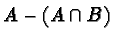

Selections can be combined in various ways. In particular, the GIMP provides the capability to add, subtract, and intersect selections.
Adding a selection to an existing one means that the resulting selection is the union of the pixels from the two. Thus, if A is the set of pixels defined by the first selection and B the set for the second, then is the result of adding the second to the first, where is the set union operator.
If a selection already exists in the image window, the addition is
made by pressing the Shift key before clicking to begin the
new selection. Once the mouse button has been pressed, the Shift
key should be released. Figure 3.15(a) shows an
initial rectangular selection, and Figure 3.15(b)
shows the result of adding an ellipse to this.
It is useful to note that pressing the Shift key while the mouse is in the image window has the effect of changing the mouse cursor to an arrow with a plus sign below it. This indicates that the next selection will be added to any selection already existing in the image window.
Subtracting a new selection from an existing one means that the result is the first selection less the pixels contained in the intersection of the two. Thus, if A is the set of pixels defined by the first selection and B is the set for the second,  is the result of subtracting the second from the first, where is the set intersection operator.
A subtraction is made by pressing the Control key before beginning the new selection. Once the new selection is begun, the Control key should be released. The result of subtracting an ellipse from the rectangular selection in Figure 3.15(a) is shown in Figure 3.15(c). Note that it is the new selection that is subtracted from the old selection, not vice versa.
It is useful to note that pressing the Control key while the mouse is in the image window has the effect of changing the mouse cursor to an arrow with a minus sign below it. This indicates that the next selection will be subtracted from any selection already existing in the image window. Because I always forget which key controls addition and which controls subtraction, I find the mouse cursor indicators are particularly useful.
Intersecting two selections means that the resulting selection is, you guessed it, the intersection of the two. Thus, if A is the set of pixels defined by the first selection and B the set for the second, is the result of intersecting the two. The intersection is made by pressing the Shift and Control keys together before pressing the left mouse button to begin the new selection. The Control and Shift keys should be released before releasing the mouse button. The result of intersecting an ellipse with the rectangular selection in Figure 3.15(a) is shown in Figure 3.15(d).
It is useful to note that pressing the Shift and Control keys together while the mouse is in the image window has the effect of changing the mouse cursor to an arrow with a sign below it. This indicates that the next selection will be intersected with any selection already existing in the image window.
As described in Section 3.1.1, the Shift key can be used to create perfectly square or circular selections, and the Control key can be used to perform selections centered at the position of the mouse click. In addition, Section 3.2 describes how the Shift key can be used for adding selections, the Control key for subtracting them, and the Shift and Control keys together for intersecting them.
The question you may be asking, then, is how these features can be used together. How can a perfect square be subtracted from a prior selection or a center-initiated ellipse added to one? The answer is quite simple. The trick is to remember that adding, subtracting, and intersecting selections is signaled by pressing the Shift key, the Control key, or both before clicking to initiate the selection. The sequence for creating a perfectly square or circular selection or for center-initiated selections is by pressing the Shift key, Control key, or both after clicking to initiate the selection. These features can be combined by applying the following steps:
Occasionally it is useful to be able to move a selection after it has been made. That is, it is useful moving the selection itself, not the selection contents. This can be done by Alt-clicking and dragging the selection boundary.